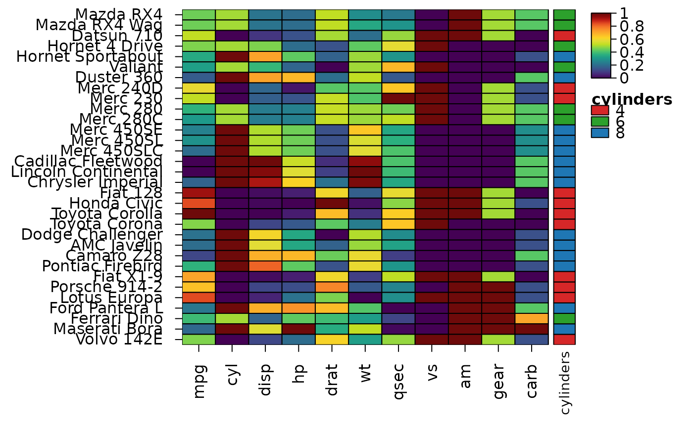

Check that the colours of a heatmap can be told apart with colour-vision deficiencies
Source:R/heat_map_colour_check.R
heat_map_check_colours.Rdheat_map_check_colours() simulates how the colours of a heatmap
look with the three common colour-vision deficiencies - deuteranopia and
protanopia (red-green, about 1 in 12 men of northern European descent) and
tritanopia (blue-yellow) - and reports the colours that become hard to
tell apart: two levels of an annotation, of the values of non-numeric
cells, of stacked bars or of branch colours, and values far apart on a
colour scale that end up looking alike. The deficiencies are simulated as
Machado, Oliveira and Fernandes (2009) model them (at full severity, in
linear RGB, as colorspace::simulate_cvd() does), and colours count
as hard to tell apart when their difference in CIELAB (Delta E) falls below
min_difference.
Usage
heat_map_check_colours(
x,
deficiency = c("deuteranopia", "protanopia", "tritanopia"),
min_difference = 10
)Arguments
- x
a heatmap (an object of class
heat_map), or colours (a vector, named by what they stand for).- deficiency
the colour-vision deficiencies to simulate, all three by default.
- min_difference
the smallest difference (CIELAB Delta E) of two colours that count as easy to tell apart, 10 by default. Colours that differ by less than this in normal vision too are reported as such.
Value
a data.frame of class heat_map_colour_check with one row per
pair of colours that are hard to tell apart: element (e.g.
"annotation cell_type" or "colour scale"), vision
("normal" or the deficiency), the two levels (first and
second; positions along the scale for colour scales), their
colours and their difference. It prints as a summary.
Details
Qualitative palettes of more than four or five colours rarely stay apart
for every deficiency: colour-blind readers see colours along fewer
dimensions. Name the levels in the legend and beside the tracks, or choose
colours that differ in lightness as well as hue, e.g. the first eight
colours of palette.colors(palette = "Okabe-Ito") (Okabe and Ito
2008; R 4.0.0 or later), given to
annotation_colours or cell_col_palette. Colour scales such
as "viridis" or "Blue-Red 3" change in lightness from end to
end, so they stay readable.
With options(HeatmapR.check_colours = TRUE), heat_map()
checks every heatmap it draws and gives a message when colours are hard to
tell apart.
References
Machado GM, Oliveira MM and Fernandes LAF (2009). A physiologically-based model for simulation of color vision deficiency. IEEE Transactions on Visualization and Computer Graphics 15(6), 1291-1298. doi:10.1109/TVCG.2009.113
Okabe M and Ito K (2008). Color universal design (CUD): how to make figures and presentations that are friendly to colorblind people. https://jfly.uni-koeln.de/color/
See also
heat_map_describe for alternative text
Examples
# The red and green of matplotlib's palette: apart for most readers, close
# for red-green colour-blind ones
heat_map_check_colours(c(case = "#D62728", control = "#2CA02C", other = "#1F77B4"))
#> 1 pair of colours is hard to tell apart (colours), e.g. case and control of colours with deuteranopia. The first eight colours of palette.colors(palette = "Okabe-Ito") stay apart for colour-blind readers.
#>
#> colours:
#> case and control (deuteranopia, Delta E 7.3)
hm <- heat_map(
mtcars,
scale = "column",
annotation_y = data.frame(
cylinders = factor(mtcars$cyl),
row.names = rownames(mtcars)
),
annotation_colours = list(cylinders = c("#D62728", "#2CA02C", "#1F77B4")),
popup = FALSE
)
#> Applying range scaling to each column...

heat_map_check_colours(hm)
#> 1 pair of colours is hard to tell apart (annotation cylinders), e.g. 4 and 6 of annotation cylinders with deuteranopia. The first eight colours of palette.colors(palette = "Okabe-Ito") stay apart for colour-blind readers.
#>
#> annotation cylinders:
#> 4 and 6 (deuteranopia, Delta E 7.3)